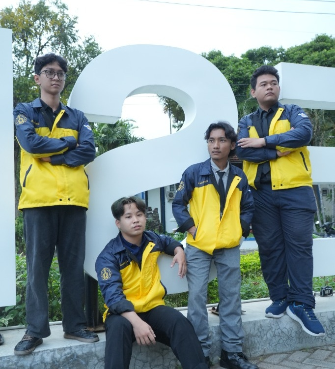
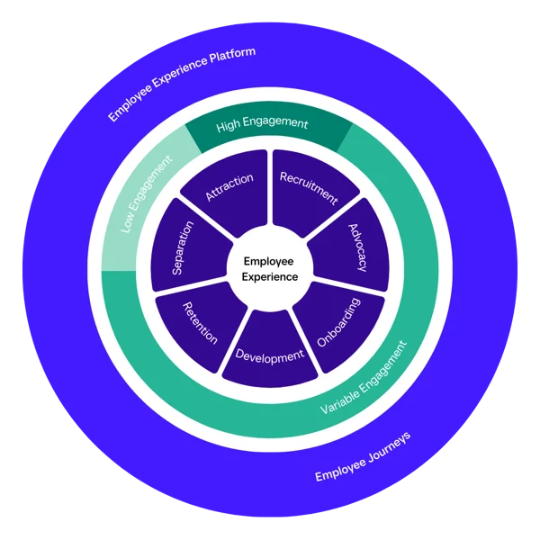
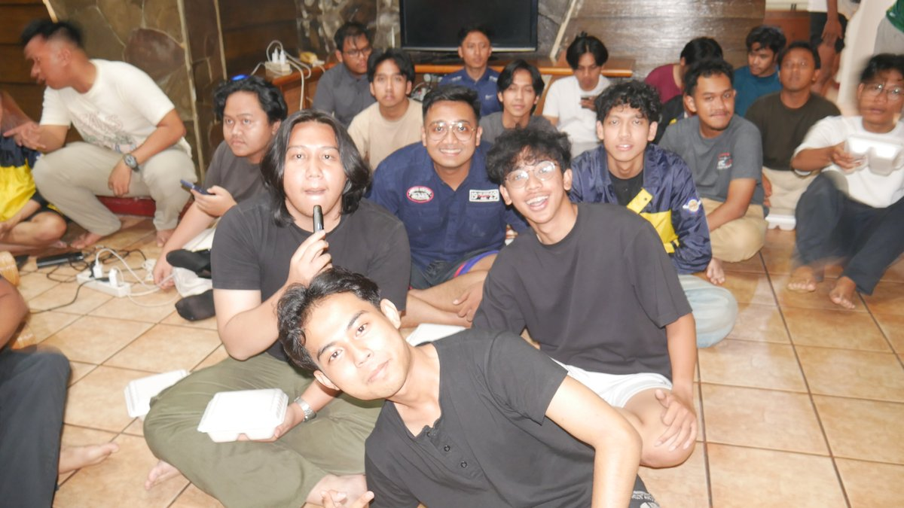
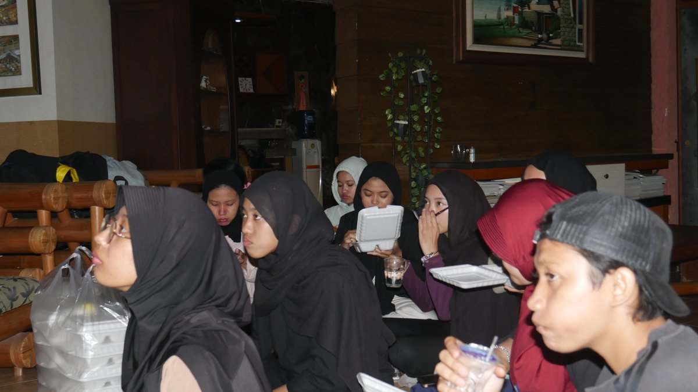
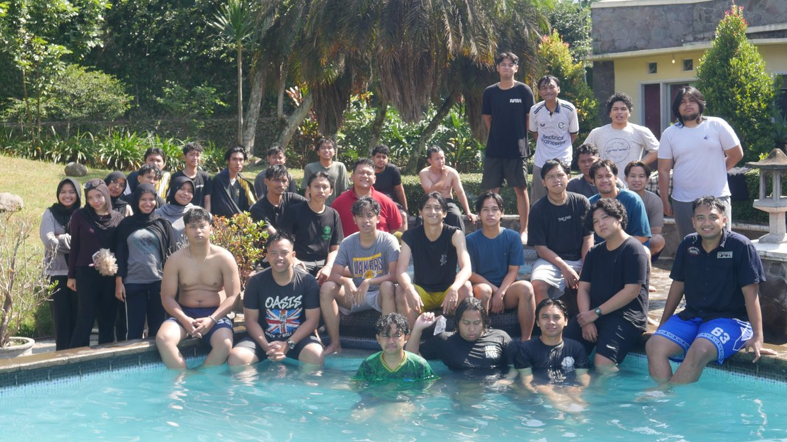
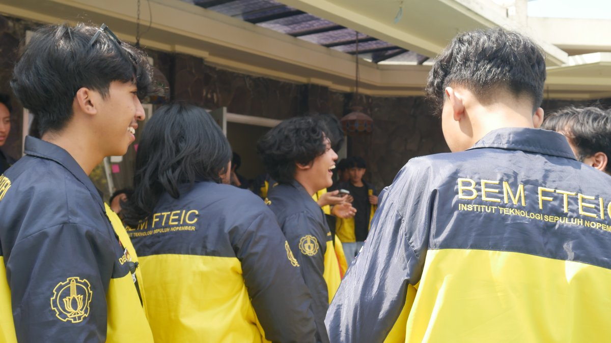
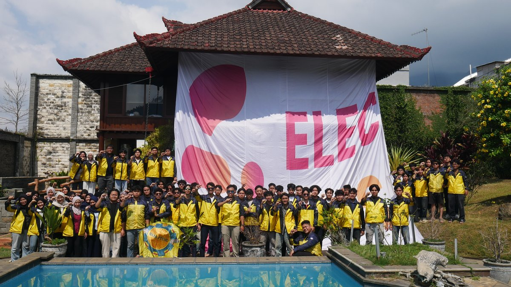
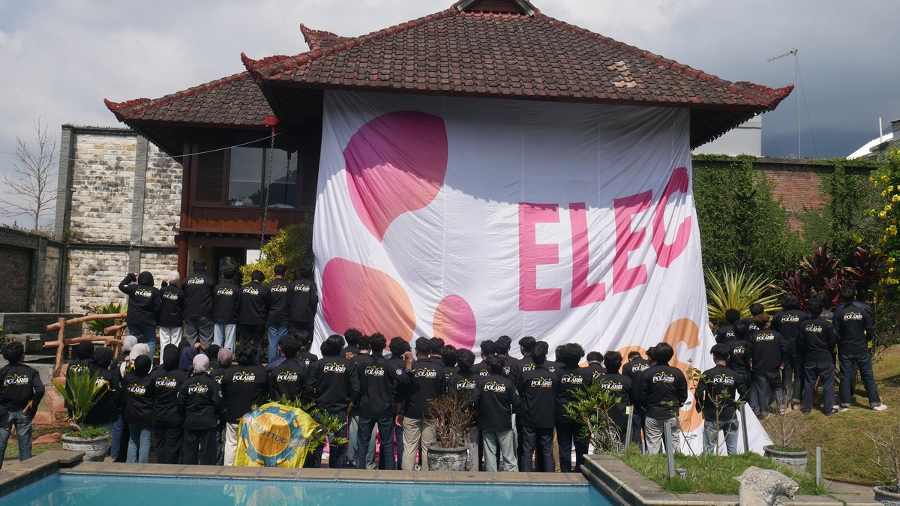
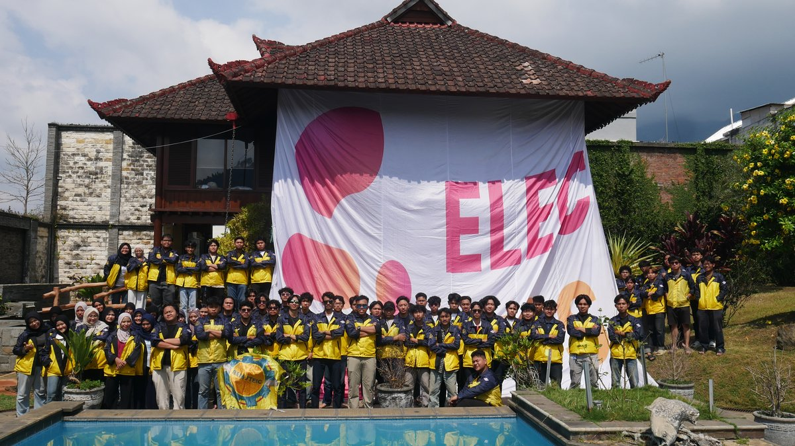

Biro Personalia berdedikasi menciptakan ekosistem organisasi yang profesional, suportif, dan inklusif. Lewat pendampingan berkelanjutan (Staff Life Cycle), evaluasi berkala yang konstruktif melalui Performance Appraisal Report, serta program kebersamaan, kami menjaga agar semangat berorganisasi tetap hangat dan bermakna.
Kami percaya bahwa organisasi yang sehat berakar dari fungsionaris yang merasa didengar, dihargai, dan diberi ruang untuk berkembang. Biro Personalia hadir mendampingi seluruh insan BEM FTEIC ITS melalui empat pilar utama:
Membuka pintu seleksi secara transparan dan adil bagi seluruh mahasiswa FTEIC, menyambut fungsionaris baru dengan penuh kehangatan, serta mengenalkan budaya kerja organisasi yang inklusif.
Memantau keterlibatan, keaktifan diskusi, dan komitmen tugas secara objektif lewat Performance Appraisal Report bulanan agar setiap jerih payah dan kontribusi staf terekam dengan adil.
Mengasah keterampilan komunikasi, manajemen waktu, dan kepemimpinan praktis lewat lokakarya interaktif, materi berbobot, serta ruang bertukar wawasan antar-pengurus.
Membangun suasana kerja yang bersahabat dan suportif, menjaga kesehatan mental bersama, serta memastikan setiap pengurus merasa memiliki rumah yang nyaman di BEM FTEIC ITS.
Menemani langkah fungsionaris dari hari pertama bergabung, melalui dinamika kepengurusan, hingga purna tugas dengan membawa bekal pengalaman berharga:

Menyapa mahasiswa FTEIC ITS yang bersemangat ingin berkontribusi melalui alur open recruitment yang jelas, ramah, dan memetakan minat serta potensi setiap pendaftar.
Mencairkan suasana lewat pertemuan santai penyambutan fungsionaris, berkenalan dengan rekan lintas departemen, dan menyelaraskan impian bersama di Kabinet Polaris.
Membekali fungsionaris dengan wawasan praktis kepemimpinan, komunikasi publik, dan cara mengeksekusi program kerja yang efektif lewat sesi bertahap Golden Insight dan Golden Escalation.
Menjaga semangat dan kehangatan tim lewat kegiatan kebersamaan santai, olahraga gembira, serta ruang ngobrol berkala untuk saling menyemangati di tengah padatnya tugas kuliah.
Menyediakan ruang refleksi bulanan yang aman dan objektif melalui Performance Appraisal Report. Setiap staf dapat meninjau keaktifan rapat dan komitmen tugas dengan privasi yang terjaga.
Mengapresiasi segenap dedikasi dan waktu yang dicurahkan sepanjang kepengurusan, sekaligus menyiapkan rekan-rekan fungsionaris yang siap melanjutkan tongkat estafet perjuangan ke depan.
Dari gerbang awal rekrutmen hingga malam puncak purna tugas, inilah 10 inisiatif strategis Biro Personalia dalam mendampingi, mengasah kapasitas kepemimpinan, dan merawat kebersamaan seluruh insan fungsionaris BEM FTEIC ITS Kabinet Polaris 2026/2027.
Gerbang awal penjaringan talenta mahasiswa terbaik dari 6 departemen di fakultas FTEIC ITS. Proses seleksi dijalankan secara terbuka, objektif, dan transparan melalui penelusuran berkas portofolio, esai motivasi, serta sesi wawancara berbasis pemetaan potensi dan minat kontribusi.
Masterplan dan pedoman strategis pembinaan sumber daya insan fungsionaris BEM FTEIC ITS selama satu periode kepengurusan. Memuat rumusan profil kompetensi ideal fungsionaris, kurikulum pengayaan bertahap, matriks peran, serta indikator keberhasilan pengembangan diri dan kepemimpinan.
Forum penyambutan resmi dan temu perdana seluruh fungsionaris terpilih bersama jajaran pimpinan BEM FTEIC ITS Kabinet Polaris. Diisi dengan sesi ramah tamah, perkenalan kabinet, ice breaking pencair suasana, dan internalisasi awal visi-misi dalam suasana kekeluargaan yang hangat.
Agenda kebersamaan istimewa di mana seluruh jajaran fungsionaris dan kabinet BEM FTEIC ITS berkumpul di Villa Batu, Jawa Timur. Ruang rehat ini didedikasikan untuk membangun sinergi lintas departemen, membuka komunikasi dua arah yang hangat dan mendalam, meredakan penat akademik, serta merekatkan ikatan kekeluargaan (bonding) agar roda organisasi berjalan guyub dan harmonis.

FRAME #01
FRAME #02
FRAME #03
FRAME #04
FRAME #05
FRAME #06
FRAME #07Sistem pendampingan dan ruang aman (safe space) bagi fungsionaris untuk berkonsultasi mengenai dinamika kerja tim, hambatan komunikasi, penanganan stres perkuliahan, maupun manajemen beban kerja (workload balance). Biro Personalia hadir sebagai pendengar yang empati, objektif, dan siap mencarikan solusi terbaik.
Rangkaian pembekalan wajib bagi seluruh fungsionaris baru guna memahami fondasi tata kelola organisasi, regulasi kesekretariatan dan keuangan, publikasi media, serta manajemen acara. Silakan klik tombol di setiap modul untuk mempelajari materi slide presentasi resmi:
Pemahaman menyeluruh mengenai visi-misi, nilai luhur Kabinet Polaris, etika fungsionaris, dan garis perjuangan BEM FTEIC ITS.
Penjelasan tata tertib keanggotaan, hak & kewajiban fungsionaris, struktur birokrasi, serta alur koordinasi lintas departemen.
Kerangka kerja Objective and Key Results bersama Biro Keorganisasian untuk merancang sasaran proker yang terukur dan berdampak riil.
Panduan branding visual, pengajuan materi postingan, timeline publikasi, dan standarisasi media informasi resmi BEM FTEIC ITS.
Pembekalan eksekusi acara, mitigasi risiko lapangan, penyusunan rundown kegiatan, manajemen kepanitiaan, serta koordinasi teknis vendor.
Ketentuan baku pengajuan surat dinas, sertifikat, proposal kegiatan, serta laporan pertanggungjawaban:
Sesi pengayaan wawasan tingkat menengah yang menitikberatkan pada kelincahan berpikir, ketahanan mental fungsionaris, serta kemampuan membangun citra diri dan program kerja secara profesional:
Membangun kelincahan dan fleksibilitas berpikir dalam menghadapi perubahan timeline, serta keterampilan mengelola komunikasi diplomatis dengan pihak fakultas dan mitra eksternal.
Mengenali tanda kejenuhan mental (burnout), manajemen energi, serta teknik mediasi penyelesaian konflik antarfungsionaris secara sehat, terbuka, dan solutif.
Strategi mengemas narasi keberhasilan program kerja dan menyusun personal branding profesional fungsionaris untuk bekal karier di masa depan.
Sistem penilaian performa fungsionaris yang dijalankan secara konsisten setiap bulan. Mencakup pengukuran presensi rapat rutin, ketepatan waktu pengumpulan tugas, inisiatif kerja, dan kedisiplinan berorganisasi. Di pengujung periode, seluruh akumulasi evaluasi dirangkum menjadi Performance Appraisal Report resmi sebagai wujud apresiasi dan rekam jejak kontribusi fungsionaris.
Upgrading puncak kepemimpinan sekaligus fase akselerasi regenerasi staf untuk mempersiapkan calon pemimpin penerus tongkat estafet BEM FTEIC ITS periode selanjutnya. Membekali fungsionaris dengan 7 modul strategis tingkat eksekutif:
Malam puncak perpisahan dan apresiasi purna bakti seluruh fungsionaris BEM FTEIC ITS Kabinet Polaris 2026. Momentum berharga untuk merayakan perjalanan satu periode, mengenang proses belajar bersama, penganugerahan fungsionaris berdedikasi, dan melepas tugas dengan penuh kebanggaan.
Akses langsung lembar refleksi bulanan fungsionaris BEM FTEIC ITS menggunakan PIN personal Anda secara privat, cepat, dan aman.
Pedoman resmi tata kelola organisasi, tertib administrasi kesekretariatan dan media informasi, serta pembinaan fungsionaris secara adil dan transparan di Kabinet Polaris 2026.
Panduan tenggat pengajuan: Surat Dinas maksimal H-7 (Dekanat H-20), Sertifikat Kegiatan H-30, Proposal H-20 sebelum tanggal 25, serta LPJ & SPJ paling lambat H+20 setelah kegiatan.
Brief postingan media dikirim paling lambat H-5 hari kerja (konten video/reels H-7 hari kerja). Jam posting 09.00 - 20.00 WIB untuk memastikan informasi sampai kepada mahasiswa secara rapi.
Surat Teguran (ST) ditujukan sebagai pengingat tata kelola administratif di tingkat departemen. Sementara Surat Peringatan (SP) menyangkut pembinaan etika dan disiplin fungsionaris secara individual.
Penerima ST tetap berhak atas sertifikat pengurus selama menuntaskan komitmen. Apabila ada kendala kedisiplinan, disediakan forum dialog (hearing) yang adil untuk mencari solusi bersama.